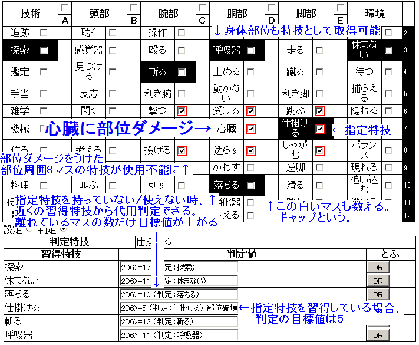
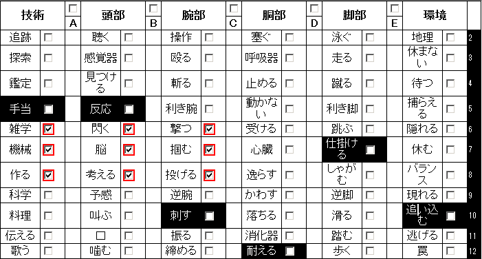
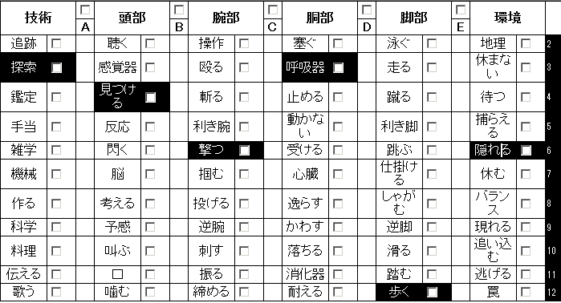
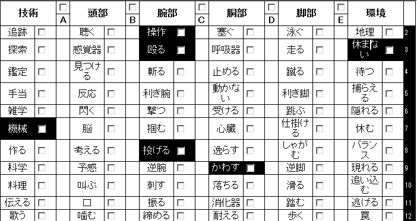

LOST～廃墟の森の子供たち～リプレイ：塩と胡椒
これは、サンプルシナリオ1を遊んだ風景のリプレイログです。作成中のデータのため、最新のデータと矛盾することがあります。
キャラクター作成
- プレイヤー1：
- ﾐ´・ω・｀ﾐノ
- プレイヤー2：
- こんばんわー
- GM：
- こんばんはー
- ダイスチャット
- このセッションはWeb上で行われた。
文明の利器の力である。
- プレイヤー2：
- ダイスチャット久しぶりだわ・・・
- GM：
- サバイバルTRPGのページはみてもらえたでしょうか。隕石落ちて富士山噴火して、大人はいなくなって、日本は森に覆われました。みなさんはキャンプに身をよせあって生きてます。
- 大人はいなくなって
- 文明は滅びた。
隕石落下後、謎の伝染病が流行り成人は全滅した。
- プレイヤー2：
- サイコロフィクション系って初めてなのでがくぶるうひひ
- GM：
- うひひ。
- 大震災は全て吸血鬼の仕業
- もしくはゴルゴム。
ブラッド・クルセイド、絶賛発売中です。
- プレイヤー1：
- この大震災は全て吸血鬼の仕業だ。ならばこの災厄の中心に俺の家族を奪った吸血鬼がいるに違いない、そうだそうしよう心臓に杭を突き立てに行こう。
- プレイヤー2：
- ２０XX年、世界は隕石の襲来に見舞われた・・・だが、人類は死滅していなかった！
- GM：
- てれってー
- 魔法使いがこの程度で死ぬわけがない
- マギカロギア、絶賛発売中です。
- プレイヤー1：
- 魔法使いがこの程度で死ぬわけがないのだ！ヒャッハー書徒を魔法で爆裂させていこう
- GM：
- と、まあ。死滅していなかったキミタチは同じキャンプの仲間です。 何キャンプにしよう。 小学校キャンプとか、公民館キャンプとかなんでもいいですけど。
- 月の魔獣
- ハンターズムーン、絶賛（以下略）。
- プレイヤー1：
- 森の中に潜む月の魔獣を相手にするには準備を整えなければならない。しかし、ただ生き残ってしまった俺はキャラクターシートの見方すらわかっていないのだ。
- GM：
- ゲーム違うから！ キャラクターシートは順番に作って行きましょう。
- プレイヤー2：
- でも、獣は容赦なく居るんでしょう？（お高いんでしょう？の感じで）
- GM：
- 豊富に用意させていただきました。
- 忍者
- シノビガミ（略）。
- プレイヤー1：
- しかし大丈夫だ。忍者なら・・・忍者ならなんとかしてくれる。
- GM：
- まずは、キャンプに何があるか1D6振ってみて下さい。 初期設備に1つ追加設備がついてきます。
- ドラム缶風呂
- 追加設備。キャンプフェイズに使用すると【気力基準値】が1点増加する。
あと、サービスカットを発注できる。
- プレイヤー2：
- （ころころ）出目6ですね。ドラム缶風呂。
- プレイヤー1：
- そしてオーサカという修羅の都から逃れてきた俺は、流れ着いたキャンプでチンピラ仲間と再開したのだった。というわけでプレイヤー3というすね傷持ちのなんでも屋を引っ張ってこよう。
- プレイヤー3：
- ﾐ｀・ω・´ﾐ だれがすねおだ ﾉｼｼｼｼ
- 初期設備
- 「屋根」「壁」「寝床」「水場」「倉庫」「食料庫」がある。
雨漏りと隙間風のおうち。
- GM：
- あらためて、順番に行きますね。
まずはPCたちが所属するキャンプを作ります。
初期設備は決まっていて、追加設備のダイスを振ります。
追加設備はドラム缶風呂になりました。あとは名前を決めれば完成。
- プレイヤー1：
- パンデモニウムと名付けよう。
- パンデモニウム
- 昔はおいしいパンが名物だった。
今は雨漏りと隙間風のおうち。
- GM：
- テクスチャは、壊れた電車を寝床にしててもいいですし、ショッピングモール跡でも、学校跡でも。どれがいいかな？
- プレイヤー1：
- テクスチャーはショッピングモール跡。暴徒に荒らされ占拠されていた所を占領し、バリケードを築いた。
- オトナ
- 20歳以上が取得できる、経験豊富っぽいクラス。5年前に20歳以上は全員死んだので、20～25歳の間で年を決定する。
- GM：
- では、キャンプはそれで。
- プレイヤー1：
- 暴徒の死体はゾンビや吸血鬼になっても困るので駐車場に運んで山積みにして火をつけた。どいつもこいつも硬直が激しく首が取れても血も出ず内蔵もなくなっていたが、これも大災厄のせいだ、そうなのだ。
- GM：
-
次に、キャラクターの作成に入ります。
まずはクラスを２つ選びましょう。１つでもいいです。１つだとこの後捕れるアビリティが一個増えます。
- キズモノ
- 消えない傷を負ってしまったクラス。最初から部位ダメージを受けているが、強力なアビリティがそろっている。
昔は強かったアピールをするのにも有効。眼帯が最近の人気アクセサリ。
- プレイヤー1：
- ほうほう（オトナとキズモノにチェックをつける）
- プレイヤー3：
- キズモノがきになりましたがとらりた ﾐ｀・ω・´ﾐ
- プレイヤー2：
- とりあえず、ハンターかな
- ハンター
- 狩人なクラス。変調を与えるのが得意。念能力は使えない。
- GM：
- ハンターは変調を与えやすいです。上手く与えれば変調つよいですよ。
- プレイヤー2：
- ※上手くいけば。あとは、スカウト居た方がいいっぽいからそれで。
- プレイヤー3：
- じゃー にゅーえいじ ﾐ｀・ω・´ﾐ 。【突然変異】 って ２つとれるのかな？
- スカウト
- シーフっぽいクラス。探索フェイズで大活躍する。斥候っていう意味らしい。
- GM：
- 【突然変異】は、１つだけです。そして、とれる特技はランダム。
- プレイヤー3：
- とれるのはランダムなのかー。ううむ、【火炎放射】 【発電】 【治癒】 【咆哮】 で、すてぃーぶんきんぐなのに出てくるサイキッカーをやろうとしたらｗ
- ニューエイジ
- 超能力が使えたりミュータントになってたりな新人類。念能力が使えるかもしれない。1人ダブルクロス。
- GM：
- ランダムでした。エネミー特技表の下に、突然変異表がありますよ。
- プレイヤー3：
- よし ニューエイジ×ショクニン にしよう
- 突然変異
- エネミーのアビリティをランダムに習得する。うっかりすると腐る。
- GM：
- クラスが決まったら、次は特技の習得です。
特技は、６つ取得できるのですが、部位ダメージをうけると、部位の周囲８マスの特技がつかえなくなるので、
少しばらしてとるのがコツです。

- GM：
- 皆さんサイコロ・フィクション初めてなので、判定についてちょっと説明しましょう。 特技を持っている場合、2D6をふって目標値５で成功です。
修正がつく特技をもっていれば、出目3にプラス2で達成値5で成功、などとできます。
もし特技をもっていない場合。代用判定ができます。例えば、《仕掛ける》が指定特技だけど、《仕掛ける》をもっていない場合、このときは一番近い習得している特技を探します。
《落ちる》の特技を習得しているとしたら、5マス離れているので目標値10になります。AとかBとかの空白列もマスとして数えます
- AとかBの空白列
- 細いマスだがしっかり数える。ギャップという名前がついている。
- プレイヤー2：
- なるほど。離れてる分目標値にプラス。
- GM：
-
アビリティやアイテムによって、使う特技が変わってくるので、そちらを決めた後に調整したほうがよいかもしれません。
- 指定特技
- 指定特技の判定に成功するとアビリティは効果を発揮する。
必ずしも取得している必要はなく、近くの使用不能にならない特技から代用判定を狙う輩もいる。
素直にとれよう。1足りないさんがくるぞ。
- プレイヤー2：
- アビリティの指定特技っていうのは取得してていいんだよね？
- GM：
- いえ、取得していません。６つ選ぶ特技の中から、選んでおくと判定に成功しやすくなります。
- プレイヤー2：
- あー、指定は取って置けよってやつか
- 気力は3しか
- キャラクターの体力基準値、気力基準値の初期値は3である。
- プレイヤー3：
- アビリティは【治癒】…… 反動６ あれ 気力って３しかないんだよね？
- GM：
- キャンプの効果で、気力も体力も上がっています。
誰も体力や気力があがるアビリティとらないようなので、【体力基準値】が5、【体力】が10、【気力基準値】が10、【気力】が10。【所持限界】が5。
今回はここまで全員共通ですね。
- キャンプの効果
-
雨漏りしようが、風が吹こうが、屋根の下で眠れることは幸せなことだ。
寝食を共にする仲間がいればなおさらである。ご飯もあるなら最高だ。
データ的には【気力基準値】プラス7、【体力基準値】プラス2。
- プレイヤー3：
- よし、とるのは【発電】【治癒】【修理】で。
- GM：
- 武器が壊れる機会は、現在のところ生死判定をふる前に武器を壊して自動成功させる、くらいなので、【修理】はちょっとジリ貧になっちゃうかもしれません。
- 修理
-
武器が壊れた時に使用する。指定特技の判定に成功し、1D6を振って5、6の出目がでると武器の破壊を無効化できる。
- プレイヤー3：
- うーん・・・ となるとショクニンもなぁ・・・
サポートイメージ（＆ 自分を機械と勘違いしている 人間も機械と思っている）子にしようとおもったのだけどね。
「 皆ボクがなおしてあげるよ！ “修理”は得意なんだ！ 」
- 武器を壊して自動成功
-
ダメージを無効などではないが、ダイスを振らなくてよいのは素晴らしい。
武器が壊れる機会は他に、アビリティによるものがある。そのうち、武器破壊イベントや
武器を壊すエネミーなんかを追加できたらと思っている。うひひ。
- プレイヤー1：
- 「修理、修理だと？まるで人間をモノのようにいうのだな。しかしそれでいい。俺は人間を捨てた。過去を捨てた。今はただ、災厄の中心にいる吸血鬼を滅するのみ」
- プレイヤー3：
- というわけでそのイメージは投げ捨てたｗ
- プレイヤー1：
- マネキンを見つけては包丁をくくりつけた杖をふりまわし、血徒は消毒だーと駐車場でマネキンマウンテンを燃やしている所を発見された。俺のパンデモニウムにようこそ。
ちなみに＜キズ＞は頭。
- ＜キズ＞
-
キズモノのクラスを取得した時に受ける部位ダメージの部位。
いかなる方法でもこの部位ダメージは回復できない。脳が……。
- プレイヤー2：
- 頭が・・・
- GM：
-
脳が・・・
- プレイヤー3：
- うーん、ニューエイジ×チビでいくかな・・・
- 通貨単位はジャーキー
-
Jと略す。
干し肉とは限らないが、とにかく食べ物。
また、上の単位にCがある。1C=10Jで、Cは缶詰の略。
- GM：
-
アビリティ、特技、体力、気力、所持限界の次に決めるのはアイテムの購入です。
武器などアイテムは、初期１０ジャーキー（通貨単位はジャーキーです。食料の物々交換）から買ってください。
あと、リュックサックも全員もっています。
- スタンガン
-
8J。重量1（以降、重量＝W)。攻撃力2、防御力無視、『麻痺』の変調を与えることのできる武器。
使うためには「充電」が必要。1回使うとまた「充電」しなくてはならない。
【発電】は「充電」を行えるアビリティ。
- プレイヤー3：
- りゅっくうっぱらいたーい
- GM：
-
いいですよ。リュックサックを5ジャーキーで売ってその分プラスの合計15ジャーキーで買い物できます。
- プレイヤー3：
- 【発電】とってスタンガンメインは決まってるのですが……
- 【武器攻撃】
-
汎用の攻撃アビリティ。【武器攻撃：《殴る》】のように、特技ごとに取得する。この場合、指定特技が《殴る》のバールや棍棒を装備しているとき、命中にプラス2の修正をつけて
攻撃できる。与えるダメージは装備している武器1つの攻撃力。
- GM：
- アタッカーやる人は、武器に合わせた【武器攻撃】のアビリティを持っておくの、オススメです。
このゲーム、目標値を上回った分が相手の回避ペナになるので。
- プレイヤー2：
- 【狙い撃ち】とお勧めの【武器攻撃】を入れ替えーの。アイテム、ボウガン買ったら所持限界になってしまった
- 所持限界
-
【体力基準値】と等しい。
装備していないアイテムを「所持品」という。
キャラクターは合計重量が【所持限界】になるまでの所持品をもてる。
- GM：
- あ、装備した分は所持限界にいれなくていいですよ。
- プレイヤー3：
- うわっ！だめだ！！ ジャーキーが1たりない！ しかし、しかし俺の中で ラジオを延々弄るちんまい子のイメージが！？だがスタンガンが！
- 携帯ラジオ
-
8J。1W。探索フェイズに手番を使って支援行動で使用可能。
「充電」が必要だが、こちらは一回「充電」すればセッション中は繰り返し使用できる。
使用すると仲間全員の【気力】が1D3点増加する。
- GM：
- アイテム買ったら、名前、性別、年齢の決定です。名前は自由にきめてもいいですし、悩んだら名前表もあります。
キャラクター紹介
- 32歳のはず
-
5年前に20歳以上の大人は皆死んだはずである。脳がやられている男の言うことだ。大目にみてやってほしい。
- プレイヤー1：
- 名前は霧隠銃蔵。男。32歳のはずだ。クラスはキズモノ×オトナ。＜キズ＞は脳を指定。取得アビリティは【銀の腕】【手練：《刺す》】【百戦錬磨】。
所持品は火付け道具/松明×２/コカの葉だ。装備は槍。
- 銀の腕
-
キズモノの常駐アビリティ。＜キズ＞に攻撃が命中した場合、そのダメージを0にする。
- GM：
- 頭なら、脳より感覚器のほうが当たりやすいのですが。
- プレイヤー1
→銃蔵： - 吸血鬼との戦いで重症を負った俺は、頭部を包帯でぐるぐる巻きにしている。怪我は既にふさがっているが、これは包帯の中に鉄板を仕込んでいるのだ。吸血鬼がおろかにも再び頭部を狙ってきても不意を打てるようにだ。
- 手練
-
オトナの常駐アビリティ。指定した特技は隣接部位に部位ダメージを受けても使用不能にならない。
- GM：
- ……。
- 銃蔵：
- 「今日本は、世界はどうなっている。吸血鬼の災厄はどれほど広がっているのだ。・・・そうか、既に日本は堕ちたか。生存者がいるようだな。しかし吸血鬼の攻勢も強まっているか。上等だ。こちらから出向く手間が省ける」（壊れたラジオにむかってぶつぶつぶつ
- 百戦錬磨
-
オトナの常駐アビリティ。命中判定にプラス1の修正をつける。
- GM：
- 脳あたりにくいし、＜キズ＞感覚器にしませんかとかいいたかったけどダメだ。完全に脳をやられている。
- プレイヤー2：
- 色々凄い事になっとる。
- 脳より感覚器
-
攻撃が命中した部位は、2D6を振って決定する。脳は2。感覚器は6。
- 銃蔵：
- 「何を言っている。俺は正常だ。戦える」
- プレイヤー2：
- 「何だこの・・・何」
- 俺は正常だ。
-
はい。
- GM：
- あ、はい。次紹介どうぞ。
- プレイヤー2：
- 名前は田中かな。性別は女で 年齢は１９ぐらいにしておこう。ハンター×スカウト。アビリティは【武器攻撃：《撃つ》】【偵察】【毒矢】
- 偵察
-
スカウトの割込みアビリティ。ランダムエンカウント表を振る前に使用する。《見つける》の判定に成功すると、ランダム表の結果を適用するか無視するか選べるようになる。反動2。
- GM：
- よかった。普通だ。
- プレイヤー2
→田中： - 所持限界:5、矢：10/10、ロープ、ベルトポーチ[ジャーキー２] 装備：ボウガン こんな感じになったよ
- 毒矢
-
ハンターの攻撃アビリティ。《撃つ》の判定に成功すると、対象に1点のダメージを与える。ダメージが通ったら、『毒』の変調を与える。反動3。
- プレイヤー3：
- 「 あ、受信した 」（嬉しそうに笑っている
- GM：
- では、最後の自己紹介どうぞ。
- 性別：？？？
-
剥かないとわからない。
- プレイヤー3：
- 名前：アイオー 性別：？？？ 年齢：８ 。ニューエイジ×チビ。アビリティは【発電】【火炎弾】【アクロバット】
- GM：
- 性別不詳かー。
- 発電
-
ニューエイジの割込みアビリティ。《機械》の判定に成功するとアイテム1つに「充電」できる。反動2。
- プレイヤー3
→アイオー： - 所持限界:5[空3] 携帯ラジオ×[1] コカの葉 ジャーキー×[1] 右手： バール
- 田中：
- あ、スタンガン諦めた。
- 火炎弾
-
ニューエイジの攻撃アビリティ。《投げる》の判定に成功すると敵1体に『炎上』の変調を与える。反動3。
- アイオー：
- 「今はただ、世界が壊れてるだけなんだよ。モジュールがね、バグを起こしてるの」
- 銃蔵：
- 「久しぶりだな。今俺はこの城を拠点に吸血鬼を待ち伏せている。そこのお前も吸血鬼狩人だな。俺の城に迎えてやろう。だが油断するな。吸血鬼はどこにでもいるぞ」（駐車場でマネキン燃やしながら）
- アクロバット
-
チビの補助アビリティ。回避判定に組み合わせて使用する。達成値にプラス2の修正がつく。反動2。
- アイオー：
- 「 少しいじればね。どんなものでも治るんだ ほら ・・・ 」 ラジオ：【・・・ッ、・・・ｶﾞｶﾞｯ・・・・ ｻﾞｻﾞｻﾞｻﾞｧｧ・・・】 「 ね？ 」
- GM/ラジオ：
- 「……ｻﾞｰ……聞いている人が、いるのをしっています。聞いて下さい、希望の歌……～♪」 などが流れてきたりして、元気がでる効果です。ラジオ
- アイオー：
- 「……誰か……聞こえていますか……誰か……聞いていますか……」
- 銃蔵：
- アイオーとは過去に会っている。そのはずだ。共に吸血鬼と戦ったのだ。そのはずなのだ。
- アイオー：
- 「 明日は晴天 雨は振らないらしい チヨオオウミが全勝 強い 強い テッポウが決まりてです 次のニュースです 明日は３００人が死ぬでしょう あさっては５００人が生まれるでしょう 次のニュースです 」（ﾎﾞｿﾎﾞｿ
- GM：
- さて、だいたいキャラもできたかな。あ、特技聞いてないや。
- 銃蔵の特技表
- 
最初から部位ダメージをうけているお脳がチャームポイント。
- 銃蔵：
- 《手当》《反応》《刺す》《耐える》《仕掛ける》《追い込む》だ。
- 田中：
- 《探索》《見つける》《撃つ》《呼吸器》《歩く》《隠れる》で。
- アイオー：
- 《機械》《操作》《殴る》《投げる》《かわす》《休まない》だよー。
- GM：
- いい感じにバラけてるね。かたまってると、時々どうしようもないことになるのでｗ
- 田中の特技表
- 
左上はまかせろー。左下は勘弁な！
- アイオー：
- 「 ラジオにはね インプットしないといけないの だからアウトプットが欲しかったら インプットしないといけないんだよ （にこにこ」
- 銃蔵：
- 「吸血鬼が、血徒が、群れをなして世界を覆い尽くしている。こいつらは駆逐されなければならん。俺が駆逐しなくてはならんのだ」ぶつぶつ
ラジオを聞けば戦意が高まる
- アイオーの特技表
- 
感覚器が呼吸器を潰せば一気に2つの特技が使えなくなる。GMとして積極的に狙って行きたいと思う。
- GM：
- うおお、大丈夫かこのキャンプ。
- アイオー：
- だめだとおもふ
- GM：
- タナカちゃんがまとめてくれると信じよう
- 田中：
- もうだめだーおしまいだー
- 女の子にした
-
剥いた。
- アイオー：
- なんか性別？？？でなくて 女の子でいいきがしてきた。
かいちゃえ えい 。 女の子にした ﾐ｀・ω・´ﾐ
- GM：
- キャンプ名はパンデモニウムでよかたですか 。
- 田中：
- 問題ないですー＜パンデモニウム 多分自分新参だから来たときには決まってた
- アイオー：
- 「 ぱんだはね 白黒なんだって モノクロームだね 」にこにこ（パンダモニウムだとおもいこんでいる
- 銃蔵：
- 「この城の名はパンデモニウム。万の魔が集う城だ。万の魔の死体が積まれる城だ」
- 田中：
- 「へ、へぇ・・・」＜この城の名は
- パンダモニウム
-
中国四千年の歴史が生んだ超合金。白と黒が合わさり最強に見える。
- アイオー：
- 「 パンダモニウムには、新しいパンダの赤ちゃんを見たいと大勢の人がつめかけています マンマをあげると、パンダの赤ちゃんは大喜びです 次のニュースです」 （ﾎﾞｿﾎﾞｿラジオに喋り、インプット）
- GM：
- では、そんな愉快な仲間とテストプレイはじめましょう。よろしくおねがいしまーす。
- 一同：
- よろしくおねがいしまーす
キャンプフェイズ
プロローグ
- GM：
- キャンプの日常のシーンです。そろそろ夕暮れ時。チヌレカラスがかあとなく。
- 吸血鬼
-
余談だが吸血鬼はだいたい20歳以上だったので5年前に激減した。
- 銃蔵：
- 「吸血鬼が浴びれば身を焼き、人が浴びれば加護を得る聖水を集めてある。お前たちが吸血鬼であるか否かは、それに浸かればわかる」
（ドラム缶風呂指しながら
- 田中：
- 「もしかして今セクハラされてるのでは」
- お風呂
-
アイオーに発現した電気ウナギの遺伝子が水中で刺激をうけることにより放電を起こした。
- アイオー：
- 「 お風呂気持ちいいね （ﾃﾞﾝｷﾊﾞﾘﾊﾞﾘﾊﾞﾘﾊﾞﾘﾊﾞﾘﾊﾞﾘﾊﾞﾘﾊﾞﾘ」
- GM：
- パンデモニウムの食堂からは カレーの匂いがただよってきます。
そろそろ御飯の時間
- GM/ようじょ：
- 「おにいちゃーん、おねえちゃーん。ごはんだってー。あ、アイオーちゃんお風呂はいってる」
- 田中：
- 「はいはい、今行くから」
- せっかくなので名前をきめる
-
つくった表は使いたい。キャンプの仲間に名前があると愛着わくのでどんどん決めよう。
- GM/ようじょ：
- せっかくなので名前をきめる （ころころ）ナルミちゃんでした。
- 銃蔵：
- 「ボンカレーはどう作っても旨いのだ」
- アイオー：
- 「 セクハラはボクも知ってる 新しい子供ができるね 」（目の下に真っ黒なクマを作りつつ、にこにこ
- 田中：
- 「いやうまれねーし」
- アイオー：
- 「 今出るよ もうはいってもだいじょうぶだよ 」（気にせず裸でお風呂からあがり、ようじょをよしよし 服になんとか見える布をきるより、まずラジオを手にとり
- こどもー？
-
お母さんに聞くとお父さんにきいてねとか言われる。
- GM/ナルミ：
- 「こどもー？」 首かしげて。 おなかがぐー。 「あ、ごはんごはん。なくなっちゃうよ」
- アイオー：
- 「 コウノトリがやってきて キャベツ畑がかいめつしたら そこから子供がとれるんだよ ラジオでいってたもん 」（ラジオを掲げ
- コウノトリ
-
ワンダリングヌシ。＜フィールド＞を持たず、空を飛び、キャベツ畑を見かけ次第舞い降りてくる奇行種。
そしてかいめつさせる。ダイコン畑やチンゲンサイ畑でもまれに目撃される。
- 銃蔵：
- 「子供……子供…… そうだ、俺には子供がいた…… いたはずだ。吸血鬼に殺された。死んだ。もういない。だから、殺さねばならんのだ。吸血鬼を」ボンカレーもぐもぐ
- GM/ナルミ：
- 「あー、じゅーぞにいちゃん。まだいただきます、してないから、たべちゃだめなんだよ」
- アイオー：
- 「 たべちゃだめなんだよ 」（ナルミの真似をしている いそいそ服をきはじめた
- 銃蔵：
- 「いただく・・・いただき・・・いただきます？何を食う、何を頂く、何を奪う！あぁ、やめろ、それに手を出すな、うわああ！」
- 田中：
- 「銃蔵、要らないならこっちでわけちゃうわよ、ボンカレー」
- GM/コータロ：
- 「はは、銃蔵さんたら。 みんな、待っててもらってごめんね。 実は重大な発表があって・・・実は、カレー、それが最後なんだ」
- GM/子供たち：
- 「えー、最後のカレー？」 「やだー、またたべたーい」などと騒ぐ子供らも
- 田中：
- 「明日からはシチューが始まるんですかね」
- アイオー：
- 「 重大発表です 私達のキャンプはついに食料が尽きたようです これ以上放送を続けることはできないでしょう 皆さんさようなら さようなら ・・・ 次のニュースです （ラジオにぶつぶつ」
- 味噌はもう切れた
-
ナゴヤ人は死ぬ。
- GM/コータロ：
- 「ラジオは、それからじゃ発信できないんだけど……こほん。塩や醤油も少ないんだ。味噌はもう切れた」
- 田中：
- 「ふぁっく」＜塩もねえ！醤油もねえ！
- 銃蔵：
- 「カレーが最後……。カレーは旨い。旨いは幸福。幸福は壊れる、奪われる。最後の幸福、それが、無くなっただと・・・？」
- ＜フィールド＞
-
ヌシという支配者が作り出した危険地域。危険な場所ゆえ、多くの物資が手付かずで残っている。
野生の楽園になっていることもあれば、我々の常識が通用しない異形の地域になっていることもある。
住人がブロックにされ、土管が乱立する＜フィールド＞にはものすごい力を秘めたキノコが生えているらしい。
赤と緑は食べて良いが紫のものはいけない。
- GM/コータロ：
- 「うん、おいしいのは幸福だし、美味しいご飯が食べられなくなるのは、皆嫌だよね。ずっと、比較的安全な森を探検して、ものを集めてきたけど、もうこの辺りは探し尽くしたみたいだ。
実は、向こうの＜フィールド＞には、レストランがあるはずなんだ」
- アイオー：
- 「 希望がなくなっても 絶望はアウトプットされないよ ー 次のニュースが始まるから 何かはきっとどこかにあるよ 」（子どもたちにラジオをたかだか掲げて見せ 「 ラジオでいってた 」
- 銃蔵：
- 「なんだと…… 吸血鬼の仕業か。血徒が食い漁ったか。ならば狩りだ。連中を狩りに行かなければ。今の俺には、もはやそれしかない」
- GM/コータロ：
- 「何か……うん。 調味料は、そこなら、レストランにならきっとある。＜フィールド＞は、危険だけれど・・・」
- 銃蔵：
- 「レストラン。吸血鬼のアジトか。そうか、ならば行くぞ」
- アイオー：
- 「 レストランには美味しい料理が沢山！ 新装開店 向こうのフィールドのレストラン （ラジオにﾌﾞﾂﾌﾞﾂ・・・ CMにはいったようだ」
- GM/コータロ：
- 「吸血・・・いや食べたのは僕らだけど・・・いや、ともあれ。 狩りにいってもらえるなら、助かるのだけど、銃蔵さん、大丈夫かい？いってくれるの？」
- 田中：
- 「ここに無くて向こうにあるなら、行くしかないかぁ」
- 銃蔵：
- 「行く。行かねばならぬ。そして狩る。狩らねばならぬ。それが俺が今生きる意味そのものだからだ」
- アイオー：
- 「 それなら、とってこよっか （クマの浮いた目元で、ほわほわ笑い ラジオで口元を隠し」
- GM/コータロ：
- 「タナカちゃんも、銃蔵さんみててくれるなら心強いなぁ」
- 田中：
- 「ﾅﾙﾍﾞｸﾈ ｳﾝ」＜銃蔵見張ってて
- 銃蔵：
- 包丁をくくりつけた杖を握り、椅子からゆらりと立ち上がる。包帯の隙間から覗く虚ろな瞳がレストランを見据える。吸血鬼を見る。
- レストランを見据える。吸血鬼を見る。
-
田中は虚空を見つめる銃蔵を見た。
- アイオー：
- 「『 生きるとは 死ぬことである 死に向かって進むことである より良き生とは より良き死に向かうことである ｻﾞｻﾞｰｻﾞｻﾞｰ 』」 声色かえて、ラジオで隠した口元から喋り
- GM/ナルミ：
- 「アイちゃん、いくの？ こわいところだって、いっちゃだめなとこっていわれたよ。でも、いかないと、ごはんが、だもんね」
- アイオー：
- 「 ナルミちゃん、へいきだよ 私は今生きてるから ラジオの予報でも、私が死ぬっていってないから 」にこにこ （ナルミをなでなで
- GM/ナルミ：
- 「そっか、予報でいってなかったなら、あんしんだね。いってらっしゃい！」
- GM/コータロ：
- （ぱんぱん！） 「みんな、アイオーちゃん、タナカちゃん、銃蔵さんが、カレーや味噌をとりにいってくれるみたいだ！ それに感謝して、今日は御飯をたべよう。 いただきます！」
- 銃蔵：
- 「興奮剤が何処にもない。吸血鬼が流通を阻んでいるのだ。流れぬようレストランに集めているのだ。おのれ吸血鬼。人類の武器、返してもらおう」ぶつぶつ
- アイオー：
- （ 銃蔵さんはラジオがなくても電波が受信できていいなー と羨望の眼差しで見つめている ）
- 田中：
- （ ノノ）＜興奮剤が、おのれ吸血鬼 ラジオで言ってないしー
- アイオー：
- （・・）？ ＞（ノノ）
- GM：
- では、顔を伏せる田中ちゃんはそっとしておいて、御飯をみんなでもぐもぐします。
- アイオー：
- 「 いただきます 」（ラジオをテーブルにおき、カレーもっきゅもっきゅ もきゅー ナルミに あーんして もっきゅもっきゅ食べさせ
- 田中：
- あ、カレーはしっかり頂きます
- GM/ナルミ：
- 「あーん。おいしいね。またたべようね。はいあーん」
- アイオー：
- 田中さんにも あーんしている スプーンふりふり
- 田中：
- あーんしてもらった
- アイオー：
- 「 インプットをしっかりしないと、力がでないよ 」（あーんばかりさせて、自分が全く食べれてないが
- GM：
-
ご飯を食べ終わり、チビたちがお風呂に入りに行く解散のあと、コータローにみなさんは呼び出されます。
- GM/コータロ：
- 「本当に助かったよ。君たちの探検用の食料や水は、しっかり準備させてもらうからね」 「とはいえ、あんまり余裕があるわけでもないんだ。あまり長く＜フィールド＞にいても、 身体によくないっていうし、4日分用意させてもらったよ」
- 銃蔵：
- 「問題ない。4日あれば十分だ。それだけ時間があれば、レストランの吸血鬼を十分に始末できる」
- ４サイクル以内
-
LOSTでは、プレイヤーの行動機会を均一にするためサイクルという概念を用いる。
1サイクルでは1人1回の行動が行え、全員行動済みになったら次のサイクルへ移る。
サイクルの制限をリミットといい、このサイクルを超えてもヌシの元へ辿りつけない場合、
そのセッションは失敗となる。
- GM/コータロ：
- ということで、このつぎに探索フェイズがあるのですが、４サイクル以内にヌシのもとへ到達してください。もし早めに突入したら、経験点が増えます
- アイオー：
- 「 ご飯がいっぱい。 コータロさん、ありがとう 」ほんわりにこにこ
- GM/コータロ：
- 「最後に、これは僕のへそくりだ。子供たちには、内緒だよ」 からん、と。ドロップの缶をくれます。【嗜好品】１つとして扱います。誰がもつかきめてね
- アイオー：
- 「 わー ドロップだー （のほほんと “あ、アンテナがわりになるかも” とか考えている」
- 田中：
- アイオーにも食べさせねばなぁ。ドロップはアイオーに持たせておこう。
- GM/コータロ：
- 「アイオーちゃん、ちゃんと食べないとチカラがでないから、向こうではしっかりたべるんだよ」 頭なでて
- アイオー：
- 「んぅ～ 分かった」（頭をなでくられ、目をつむりくすぐったそうに
- 銃蔵：
- 「幸運のお守りか」
- GM/コータロ：
- 「いざというときに、食べると疲れがとれるよ。お守りがわりにとっておいて結局食べなくてね。危険なとこへ旅立つ皆の役にたつならさ」
- アイオー：
- 「 疲れたら食べるね （食べたらアンテナにするね）」
- 銃蔵：
- 「そうだな。幸運のお守りを甘く見てはいけない。死ぬぞ」
- GM：
- キャンプフェイズのプロローグは、これで終了です
行動の処理
- GM：
- キャンプフェイズでは、それぞれ１回行動の処理ができます。 次の行動の中から１つ選んで下さい。
【散策表をふる】
【お風呂にはいる】
【タイプが支援の特技やアイテムを使う】
- 【お風呂にはいる】
-
正確には、【タイプ：支援のキャンプ施設の利用】
- 田中：
- 散策しようかな
- GM：
- では、田中ちゃん、1D6をふってくださいな
- 田中：
- 「じゃあ、ちょっと準備してくるから」 とかいいつつ散策をした結果(ころころ）6番。
- GM：
- パンデモニウムの奥からなんかでてきました。 1D6を振り、1、2ならバッテリー、3、4なら1J、5ならナイフ、6なら缶詰を手に入れます。
- アイオー：
- 笹！ 笹かもん！
- 田中：
- （ころころ）「バッテリー・・・・アイオーにでもあげたら良いか」ベルトポーチに突っ込んでおく
- 銃蔵：
- では俺も散策だ。 （ころころ）3。
- GM：
- 子供たちが元気に遊んでいるところに遭遇しました。 【気力】が1D6点増加します。銃蔵さんのまわりを、鬼ごっことかしてる子供たちがちょろちょろと
- 銃蔵：
- 「…… 俺の子供も生きていれば…、いや、よせ、やめろ。死んだ人間は成長などしない！そして死んだのは吸血鬼のせいだ。絶対に逃がすものか、必ず追い詰め、駆逐してやろう」 戦意があがった！ （ころころ）1。すっくねぇ！
- アイオー：
- じゅうぞうはさてはこどもぎらい
- 銃蔵：
- 子供を視界と意識から逸らすことで、喪われた楽園の幻想を拭い去り、現実の地獄を歩むのだ。
- GM：
- 何故かフラッシュバックする吸血鬼の記憶に増えた気力が削られて差し引き１みたいな
- アイオー：
- 吸血鬼：「 がおー☆ たーべちゃーうぞー 」（ふらっしゅばっく
- 銃蔵：
- うぉおおお、ゆるさんぞ吸血鬼！＞がおー★
- アイオー：
- よし・・・ お風呂で少しでも気力を、とおもったけども、 ３狙ってみよう 散策ー（ころころ）
- GM：
- 配給係から食料を多めに準備してもらえました。 リミットが1サイクル増加します。
- GM/ナルミ：
- 「これ、もってって。がんばてね」 とっておいたカンパンとかくれました
- アイオー：
- 「 ナルミちゃん、いいの？ （カンパン受け取り、首をこてりとかしげ ・・・少し考え」
- GM/ナルミ：
- 「うん。あたしは、いっちゃだめっていわれたし、アイちゃんいっつもくれるから、おれい！」
- アイオー：
- （ラジオで口元を隠し） 「 次のニュースです とあるキャンプで、大切なカンパンをあげるというノーベル文化賞的行為がある少女によってもたらされました これは人類にとっての素晴らしい一歩です 次のニュースです 」
- GM/ナルミ：
- 「えへー、のーべる」
- GM：
- ということで、全員行動終了でサイクル終了。
キャンプフェイズを終了します。次は、探索フェイズ。リミットは４サイクルだったのが５サイクルになりました。余裕ですね！
探索フェイズ
1サイクル目
移動
- チェックポイント
-
いくつかのチェックポイントを経由してヌシの元へ向かう。
何故チェックポイントへ向かうのか。そこにチェックポイントがあるからだ。
多くのチェックポイントを通るとそれだけもらえる経験値も増える。
- GM：
- 探索フェイズ、まずは移動ですが、最初はなし。 探索フェイズはチェックポイントとよばれる場所を経由することでヌシのもとへと向かいます
- アイオー：
- カンパンとドロップ缶を腰から吊り下げ、かんかん音をたてながら集合
- GM：
- ということで、チェックポイントA：パンダ公園
チェックポイントA:描写・遭遇
- アイオー：
- 「 ！？ 」
- 田中：
- パンダモニウム最寄の公園 パンダ公園
- GM：
- 森の中に、広場があります。誰も乗っていないブランコに蔦がからみつき、 砂場だった所にはは小さな草が青々と茂っています。パンダの遊具には落ち葉が積もっています。
- アイオー：
- 「 ！！ 」指ぶんぶん！ ＞ パンダ公園の文字
- ツノウサギ
-
【体力】1。【気力】3。一本角の生えたウサギ。アルミなんとかとの関係性は不明。
【鋭角】と【体当たり：《刺す》】 を組み合わせて2点のダメージを与える予定。
倒すと肉や毛皮を落とすのでおいしい。
- GM：
- そして、茂みから飛び出してきたツノウサギ3体と戦闘になります。
- アイオー：
- 「 ぱんだー！ 」（何故か興奮している ＞パンダの遊具
- 田中：
- 「パンダの前に兎だなぁ」
- 血徒
-
銃蔵の目にはラビットだろうがタビットだろうが血従にみえる。
- 銃蔵：
- 「血徒か。吸血鬼の前に狩ってやろう」
- アイオー：
- 「 兎さんよりパンダー・・・ 」 「 と、被告は申しており・・・（ラジオにﾌﾞﾂﾌﾞﾂ」
- GM：
- かわいいウサギですが、信条を攻撃は最大の防御としているのでバリバリ攻撃してきます。倒しましょう
- アイオー：
- 「 ねこじゃないよ うさぎだよ？ 」（ｼｮﾝﾎﾞﾘしつつ、危険なオーラがするので バールのようなものを地面にゴンッ！と
- GM：
- 戦闘では、まず先制判定をおこないます。これに成功すると先手、失敗すると後手で行動となります。判定に使用する特技は表をふって（ころころ）今回は《反応／頭部5》
- アイオー：
- 先制は全員ふるのかな？
- GM：
- 全員ですね。先手後手はキャラクターごとに決まります。
【先制判定】＞【先手の行動（冒険者）】＞ 【エネミーの行動】 ＞【後手の行動（冒険者）】 ＞【追加行動（ある場合）】＞ 【ラウンド終了処理（変調など）】
の順に戦闘のラウンド処理はすすみます
- アイオー：
- もちろん 《機械》から代用判定だ！ ラジオが急にノイズ音を発し、敵の行動を阻害する！（ころころ）じゃすと
- GM：
- ツノウサギがびくっとノイズに身をすくめる。（全員の出目をみて）全員先手ですね。行動の順番は自由です。
- アイオー：
- 「 次のニュースです キャンプ周辺の公園で小動物の死体が発見されました 死体の様子から複数名からの暴行を受けた模様で（ﾌﾞﾂﾌﾞﾂ・・・」 ラジオ：「・・・ｻﾞｻﾞｯ・・・ ｼﾞｰ・・・ ガガガガガガッ！！」
- 吸血鬼との幾度もの死闘をくぐってきたはず
-
毎年夏になると現れる。O型の銃蔵は特に狙われやすい体質。
- 銃蔵：
- 吸血鬼との幾度もの死闘をくぐってきたはずの俺からすれば、血徒の不意打ちなど児戯に等しい。包丁槍でチャージアタックの体勢をとっているぞ
- 田中：
- ツノウサギが出てきたのを見つけた時には既にボウガンを構えてました
- アイオー：
- バールかまえ！「・・・お困りならばあいつを呼べ・・・送電塔が囲むグラウンド・・・」（ラジオを耳に当て、目を薄く瞑り 何処かできいた曲を思い出し）
- GM：
- 攻撃するならまず命中判定です。 武器に指定された指定特技で判定をおこなってください。
成功すると、武器の攻撃力点のダメージを敵に与えられます。
もしくは【アビリティ】の使用を宣言してください。
- 槍
-
4J。4W。攻撃力3。両手持ち。指定特技は《刺す》。
- 銃蔵：
- 槍で攻撃だ。指定特技は《刺す》。常駐の【百戦錬磨】で命中判定にプラス1の修正がある。出目4あれば成功するな。
ではまず俺が突っ込む。ウサギの姿の血徒に、槍を突き刺し、ぐりぐりとえぐる。（ころころ）達成値は11だ。
- 【武器攻撃：撃つ】
-
汎用の攻撃アビリティ。指定特技が《撃つ》の武器を装備している場合、《撃つ》の判定に成功するとその武器の攻撃力点のダメージを与える。
また、この判定にプラス2の修正がつく。田中はボウガンを装備しているので与えるダメージは3点。
- GM：
- ウサギAは、回避を試みる。回避には気力1点消費です。
で、達成値11から目標値の5を引いて、6のペナルティがかかる。
回避の指定特技は、攻撃者の指定特技……槍の《刺す》だから……ツノウサギの特技は《刺す》で丁度持っている。
11以上（ころころ）ムリ。2点ダメージで体力0。
＜ヌシ＞以外の敵は【体力】が0になると倒れます。
- 銃蔵：
- 「所詮やはりこの程度か。吸血鬼とは比べ物にならんな」包丁突き立て凄惨に哂い
- ボウガン
-
8J。3W。攻撃力3。両手持ち。指定特技は《撃つ》。装備していると回避判定にプラス2の習性がつく。
ただし、矢（消耗品、10本セット）を持っていないと効果を発揮しない。
- 田中：
- 【武器攻撃：撃つ】でボウガンを撃つよ。よ。
（ころころ）成功。「ツノより矢を生やしてる方がお似合いね」
- GM：
- （ころころ）回避失敗。とすっ。２匹目脱落。
- アイオー：
- ずるずると引きずるバールを、兎に向かって打ち上げるよ！（ころころ）六ゾロ！
- バール
-
4J。2W。攻撃力2。片手持ち。指定特技は《殴る》。
- GM：
- スペシャル！！判定で6ゾロを振ると、変調が回復して、気力が1D6増加します。さらに、命中判定の場合スペシャル表をふります。
- アイオー：
- 「・・・ インプット 「 パンダヒーロー 」 ・・・ 届いたよ （凄惨な行動にもかかわらず にこにことわらい」
（ころころ）気力5点増加して15点になって（ころころ）スペシャル表の効果は防御力無視！
- 全滅
-
ダメージを与える予定が……。予定は未定だった。ぐぬぬ。
- GM：
- （ころころ）スペシャルはスペシャルでしか回避できない。むり。
ウサギ防御力ないのでスペシャル表の効果は意味ないですが、倒れました。全滅。
- アイオー：
- 「 ノイズだけ吐いて犬ラジオ フラフラにネオンバニーガール 」 ～♪ 兎の中心部をバールで打ち抜き、ラジオから曲を効いているかのように上機嫌で
- GM：
- ドロップ品判定があります。1d6。丁度３体なので全員1d6ふってください。
- 一同：
- （ころころころ）
- GM：
- 毛皮（価格1J、重量1）二枚と、生肉1個（価格1、重量1、食料）ですね。リュックにでもいれといてくださいな。これで遭遇は終了です。
- 銃蔵：
- 血徒の皮膚は呪物として利用できるのだ。これは調達で役に立つだろう。
- アイオー：
- 「 凄い 凄い パンダヒーロー 満塁ホームランです 兎チームを破ったパンダヒーローには毛皮２つとナマニクが贈呈されます 次のニュースです （ラジオ手にﾌﾞﾂﾌﾞﾂ」 パンダ遊具が気になってしかたないようだ
行動の処理
- GM：
- 探索フェイズに冒険者ができる行動は次です。
【障害の突破 障害の突破を試みます。 】
【探索 森の探索を行いアイテムを入手します】
【休憩 休んで【気力】を増加させます。】
【支援タイプのアイテム・アビリティなどの使用 】
【オブジェクトへの接触 】
- 銃蔵：
- 【障害の突破 】をやろう
- GM：
- 【障害の突破 】ですね。障害を突破しなくては、次のチェックポイントへ移動出来ません。
今回は、チェックポイントBへの道に続くトンネルが崩れています。
瓦礫をどかさなくては進めません。突破の指定特技は《掴む／腕部7》です。
- 脳がキズモノの俺には判定が不可能
-
脳に部位ダメージを受けると、《掴む》の特技は使用不能になる。代用判定はできるので、判定は可能である。
- 銃蔵：
- うむ、脳がキズモノの俺には判定が不可能だったぞ
- GM：
- いえ、判定可能です。《刺す》からの代用判定で目標値8です。
- 銃蔵：
- 《刺す》から《掴む》までは3ブロックだから、7+3で10になるのでは
- GM：
- 目標値の基準は5です。 腕部7っていうのは、特技表の番号です。腕部の7番に《掴む》がある。
- 銃蔵：
- そうか。
《反応》でも目標8だったので、ここは《反応》で代用判定をやってみよう。吸血鬼の妨害など、俺の前では無力だ。何故なら吸血鬼が通るための道があるはずだからだ。 （ころころ）
見つからなかったぞ、おかしい、何故だ。
- GM：
- 銃蔵は瓦礫の前で立ち往生している
- 奴ら、籠城のつもりか
-
生き残った吸血鬼は、＜ヌシ＞となって＜フィールド＞の奥に館を作って引きこもっているとかいないとか。
吸血鬼の＜フィールド＞は1日じゅう夜のものが多い。もやし栽培に最適。
- 銃蔵：
- 「このトンネルを通らなければ行き来は出来ない。吸血鬼にとっても同様のはずだ。奴ら、籠城のつもりか」
- アイオー：
- 【パンダ遊具に】 接触！ パンダ～ あれがパンダなんだね 初めてみた～ 」（ほわほわ～ふらふら～っと遊具に吸い寄せられていく
- GM：
- はい、パンダ公園はオブジェクトです。《探索/技術3》に成功すると、公園探索表を振りアイテムを入手できます。 判定に失敗した場合、公園探索失敗表をふります。
- ばっとぉおおお！！！
-
よほど琴線に触れるものがあったらしい。公園探索表を確認し、入手アイテムにバットを見つけたアイオーの魂の叫びであった。溢れ出る物欲。
- アイオー：
- ばっとぉおおお！！！ 《探索》は《殴る》から２つ離れてるから 目標値7かな？
- GM：
- アイオは殴るから代用で目標値9ですね。ギャップ（AとかBとかの空白マス）を数え忘れてます。
- アイオー：
- おおう そんなものが・・・
環境と技術 は繋がってないんだよね
- GM：
- つながってないですね。ハカセにつなげるアビリティがある。
- ようかい１たりない
-
卓ゲ界に出没する妖怪。ダイスに息を吹きかけてから振ると追い払えるという迷信がある。
- アイオー：
- 「 えへ～♪ パンダー お揃い～♪ 」（めもとのクマを指さしながら、ぱんだぺちぺち（ころころ）ようかい１たりない
- GM：
- パンダがびよんびよんする。1d6で失敗表をどうぞ
- アイオー：
- 「！！」（ころころ） 2！！
- 失敗表をみて
-
失敗表にはパンダのことなど一文字も書かれていなかった。
- GM：
- （失敗表をみて）錆びたバネがぼきりと折れてパンダが横になりました。 特にデメリットはなし。
- アイオー：
- 「 パンダは びよんとなるのです パンダは獰猛であり、とても愛らしい生態をしているのです 横になりましたね きっともうお休みの時間なのでしょう それでは現場のクシロアナ （ﾌﾞﾂﾌﾞﾂ・・・ パンダぎゅー」
- 田中：
- じゃあ、銃蔵のフォローにいこうかな。【障害の突破】を行うよ。瓦礫が崩れそうなところにさっきの兎死体から角捥いで瓦礫に撃つってことで。
《撃つ》から代用判定で目標値は6（ころころ） あ、6ゾロ。
- 6ゾロ
-
出目が6ゾロだとスペシャルという素晴らしい成功となる。達成値に関わらず判定は成功となり、【気力】が1D6点増加する。
- GM：
- 皆さん出目よすぎませんか。田中ちゃんがウサギの角をくさびにして、安全に通れる道を開いた。 素晴らしい出来に1d6気力回復。
- 田中：
- （ころころ）気力1点増加。「まあ、こんなもんよね」 あまり気力は上がらなかった
- 銃蔵：
- 「これで奴らの巣に行ける」
- GM：
- 全員が行動済みになったので、これで１サイクル目は終了です。
2サイクル目
- GM：
- ２サイクル目、
チェックポイントBへの道は田中ちゃんが切り開いているので、移動ができます。
とどまることも可能です。
- 銃蔵：
- 勿論移動だ。踏みとどまる理由などない。
- アイオー：
- 「（ 横になったパンダをぎゅーして名残惜しそうにしている 」
- 田中：
- 「おーい、いくよー」
- アイオー：
- 「 行く～・・・ 」（パンダに ばいばいと手をふり とことこ田中さんのもとへ
移動
- 気力を2点消費
-
アビリティには反動が設定されているものがある。使用するためには反動の分の【気力】を消費しなければならない。
- GM：
- はーい、移動します。移動の時には、ランダムエンカウントの表をふるのですが、【偵察】の使用タイミングはここ。
- GM：
- 田中ちゃん、使いますか。
- セーフ
-
妖怪1たりないが筆箱の影から覗いていたが帰っていった。
- 田中：
- 【偵察】使いましょう。気力を2点消費して、アビリティの指定特技は《見つける》。
取得しているので目標値は5……（ころころ）5。セーフ。
- GM：
- （ころころ）ツノウサギ3体がいました。このままいくと、襲ってくるでしょう。
あなたは避けていってもいいし、肉を狩りに倒しにいってもいい
- 田中：
- 避ける？
- アイオー：
- ひゃっはーするより避けていこかｗ あんまり肉と毛皮ばかりとっても重量がね！
- GM：
- 懸命です。ﾁｯ
- 銃蔵：
- 吸血鬼を滅ぼさねば血徒は無限に増える。さっさと吸血鬼を潰すために時間を優先するのはありだ。
- 角が3本見えた
-
ツノウサギの進化系のトライホーンだったのかもしれない。進化方法は通信ケーブルで友達と交換だ。
- 田中：
- じゃあ、遠目から角が3本見えたので二人に知らせて避けて進みましょう
- アイオー：
- ラジオを胸元にぎゅっとして音をたてないようにしつつ、こそこそ
- 銃蔵：
- 気配を殺して槍を構えてこそこそ
チェックポイントB・描写
- GM：
- チェックポイントB。コンビニだった建物があります。棚が倒れて、ガラスは割れています。 また、コンビニの向こうに川が流れています。これは「水場」のオブジェクトとします。「コンビニ」もオブジェクトとします。
- アイオー：
- 「 緊急速報です 川が流れています このままでは川を横断することになるでしょう それでは現場のリツコサン （ﾌﾞﾂﾌﾞﾂ・・・」
- GM：
- オブジェクト：コンビニ 《探索/技術3》に成功すると、コンビニ探索表を振りアイテムを入手できます。
判定に失敗した場合、コンビニ探索失敗表をふります。
- アイオー：
- カンパンぱかっとあけ、皆に差し出したりしつつ もっきゅもっきゅ
- 田中：
- カンパンもぐもぐ
- GM：
- 先に進む道の障害についても説明しときますね。ヌシの間への道に続く橋が崩れています。材料を集め、筏を作って、川を渡りましょう。
【障害：材料集め】突破の特技：《斬る/腕部4》or《探索/技術3》
【障害：いかだ作り】 突破の特技：《作る/技術7》
【障害：いかだで川渡り】 突破の特技：《操作/腕部2》
- アイオー：
- 「 いかだ作らないとね 」 川渡りならまかせろー！（ばりばりー）←《操作》を取得している。
行動の処理
- GM：
- ということで、ここから次のチェックポイントに進むための障害は３段階です。
まだ時間もあるので、ヌシとの戦いに備え休憩してもよいし、アイテムを探して探索するのもよい。 コンビニをあさるのもよい。
- 田中：
- 「材料なんてロープしかないから探さないとね。 めんどうな」
- アイオー：
- コンビニあさりたくはあるけど、失敗度が高いからなーｗ
- GM：
- 川幅はひろく、緑にそまった中央の水深は深そうだ。
- 銃蔵：
- 勿論【障害突破】ダァー。「手当」で材料集めで目標7。廃材を見つけて修復するのだ。（ころころ）8。成功だ。
- GM：
- お。では、銃蔵は廃材をかき集め、材料に使えそうな感じにつぎはぎしてゆく
- 銃蔵：
- 「これは吸血鬼の結界を破るために作られた兵器の残骸だ。修復すれば使える」がっこがっこ
- GM：
- 吸血鬼退治のいかだって白木の丸太でもみつけたのかなぁ
- 田中：
- その木材、きっと先端尖ってますよね
- アイオー：
- このまま続行で 作る 操縦 とこのターン内にできるのかな？
- 田中：
- 未行動の私とアイオーで頑張れば。でも作ったり操作するのは苦手なんだよね
- アイオー：
- どっちも得意ｗ じゃぁアイオーが作ろうかね 田中さんには探索でも！
- 田中：
- 「ちょっと何か探してくるわ」（ころころ）《探索》成功。（ころころ）5。
- GM：
- レトルトごはんをみつけた！ １ジャーキー扱い。
- 田中：
- 「おお・・・佐○のごはん」
- アイオー：
- 「 砂糖かけごはん？ おいしそうだね 」（ほわほわ
- 田中：
- 「違う違う、昔農家のさとーさんが丹精こめて作ったという（ｒｙ」
- アイオー：
- 「 さとーさんはすごいねー （すごく頷いている」
- GM：
- さて、最後の未行動のアイオーの行動です。
- アイオー：
- 「 銃蔵さん、そっち持って。 重たいの 」（こくこく と、銃蔵をこきつかいつつ（げふげふ いかだを作るよ！
- GM：
- どうぞ。《作る/技術7》です。
- アイオー：
- 「 カンパン缶をここにつけて・・・ じんこーえいせーからラジオの電波を相対性理論により（ﾌﾞﾂﾌﾞﾂ・・・」 いかだ作り！《機械》から代用判定で（ころころ）成功。
- GM：
- なんかすごそうないかだができた
- GPS(脳内）搭載いかだ
-
人工衛星（ソ連製）にアクセス 位置情報を割り出し、なんやかやなニューエイジ能力的な方法により、電磁場を利用したイカダの半自動制御を確立（アイオー談）
- アイオー：
- カンパン缶をアンテナ＋マストに見立て、GPS(脳内）搭載いかだ！
- 銃蔵：
- 「よし、乗り込め」
3サイクル目
行動の処理
- GM：
- では、２サイクル目は終了。３サイクル目にはいります。皆、行動済みから未行動にもどりますよ。
- アイオー：
- アイオーが操縦成功したら、二人は探索できなくなるかな？
- GM：
- 順番は関係ないです。障害突破した後に、探索表ふってもいいですし、オブジェクトコンビニを探索することも可能です。
- アイオー：
- よし、それじゃいかだが「操縦できる状態にする」というかんじで、レッツ操縦！ （ころころ）成功！
- GM：
- 成功！ 障害突破により、いつでもヌシの間にいける状態になりました
- さとーさん
-
土を米に、水を日本酒に変えたサトーさんは水車に貼り付けにされて胸をモリで刺された後復活した。
サトーさんが復活した年を0年とするAS（アフター・サトー）表記がある。
- アイオー：
- 「 明るいニュースです さとーさんが皆のお腹をみたしていたのです 土からお米を作っていたのです （ラジオをカンパン缶にとりつけ、 ・・・ 電気をﾊﾞﾘﾊﾞﾘﾊﾞﾘｯ！！と通し（演出」
- 田中：
- 「でも私田中なのでダメなのよねこれ・・・銃蔵さん後で食べます？」 田中VS佐藤
- 田中VS佐藤
-
宗教戦争はアフターホロコーストの世界でも未だ根深い。
- アイオー：
- 「 ぜんこくのたなかさんがさとーさんに対し宣戦布告を行いました 近隣住民の方は急ぎ避難してください 次のニュースです （ﾌﾞﾂﾌﾞﾂ」
- 銃蔵：
- 「食える時に食っておけ。5分後はおろか、5秒後に死ぬ事もあるのが吸血鬼狩人だ」
- 田中：
- 「それ銃蔵さんも当てはまるじゃないですか」 でもベルトポーチにごはんをしまう
- アイオー：
- 「 銃蔵さんは平気なのね 凄い （電気がﾊﾞﾁﾊﾞﾁと音をたてながら、ほわわんと笑い」
- 銃蔵：
- 探索しておくか。手当からさかのぼって目標7。対吸血鬼用兵器のマルタ号の動力になりそうなものを研究所（コンビニ）からさがすのだ。（ころころ） 成功。表は（ころころ）3だ。
- GM：
- ミント味のガムをみつけます。これは【嗜好品】として扱います。
- 興奮剤があったぞ
-
ガムに興奮する銃蔵。
- 銃蔵：
- 「ほう」 興奮剤があったぞ。 「やはり独占していたか」
- 田中：
- 気力使ったし、休憩しようかな
- GM：
- はーい、休憩表は２D6でーす
- 田中：
- きゅーけーひょー （ころころ） 9。
- GM：
- 仲間と模擬戦をしてから眠りにつく。【気力】が3点増加する。 相手として仲間1人を選ぶ。
相手が《振る/腕部11》の判定に成功すると、 次の戦闘であなたの与えるダメージが1点増加する。
- 銃蔵：
- では見せてやろう。本物の吸血鬼狩人の模擬戦というものを。
- 田中：
- 「銃蔵さん銃蔵さん、ちょっとウォーミングアップと行きませんか」
- 銃蔵：
- 「この程度あしらえなければ、お前は死ぬだけだ」
（ころころ）成功。 と言いながら、包丁槍を田中に振り向きざまに振った
- 田中：
- 「ウォーミグアップって言ってるのに！」 慌てて避けつつ
- 銃蔵：
- 「吸血鬼の本懐は奸計だ。油断するな、背中を見せるな、背中を見れば罠と思えそれが吸血鬼の跋扈するこの世界で生きる術だ」
- 田中：
- 「背中向けてるようだったら普通は距離とって撃つけどね」
- アイオー：
- 「 先手 銃蔵竜王 ２三包丁 後手 田中６段 ４一回避 解説のさとーさん この一手をどう思われますか （ラジオにﾌﾞﾂﾌﾞﾂインプット」
- GM：
- 銃蔵さんはぶれねえな。 ぶれてるけどぶれないな。アイオーちゃんは充電してないラジオに話しかけ続けるし。不安。
- アイオー：
- 「 きちんとアウトプットしないとね 独り占め だめ 」こくこく
4サイクル目→
- 経験点が増えます
-
リミットが5サイクルで、今は3サイクル経過している。
早く挑んだ分のサイクル点経験値が増えるので、今挑めば2点の経験値が増える。
- GM：
- では、４サイクルめー。気力体力アイテムの探索につとめてもよいし、さっさとヌシに挑めば経験点が増えます
- アイオー：
- さっさといどんで、経験点をゲットしようか！（すでに結構充実）
- 結構充実
-
ちくしょう。
- GM：
- では、探索フェイズは3サイクルで終了。決戦フェイズに移るよ！
決戦フェイズ
移動
- GM：
- まずは移動で！ ＜ヌシ＞のいる＜チェックポイント＞に向かって下さい。
- 銃蔵：
- マルタ号で吸血鬼の巣に向かうぞ
- うげ。4
-
おかえり、妖怪1たりない。
- 田中：
- 【偵察】使いますー （ころころ） うげ。4。酔いました
- GM：
- ランダムエンカウントは…（ころころ） ナガムカデ１体。
- アイオー：
- ラジオ：【 ｶﾞｶﾞｯ・・・ ｻﾞｻﾞｻﾞｧ・・・ …… …… ｻﾞｻﾞｯ ﾜｰﾆﾝｸﾞ …… ｻﾞｻﾞｯ ｻﾞｧｱｱｱｱｱ・・・】
- 田中：
- 「うぅ・・・」
- GM：
- では、渡った道を進んでいると、なんか長いの踏みました。 田中ちゃんは酔ってて気づかなかった
- 銃蔵：
- 「―― 」
- GM：
- （シャガー） と鎌首持ち上げて威嚇。１ｍ級のムカデです
- アイオー：
- 「 田中さん、だいじょうぶ？ （背中さすさす） ・・・ わぁ、おっきい 」
- 銃蔵：
- では田中を槍の柄で後方になぎ飛ばして前に立とう
- GM：
- 先制判定の特技は《隠れる／環境6》です。
- 田中：
- 「川なんて初めて流れたから・・・うぇぇ」なぎ飛ばされた
- GM：
- ムカデ（シャカシャカシャカ） 身を隠すと、不意をつけそうな動き方をしてます。
- 田中：
- 《隠れる》は取得しているので5です。（ころころ）成功
- アイオー：
- 目標値8で…（ころころ）失敗。背中さすさすしてて出遅れた！
- 銃蔵：
- 《脚部/仕掛ける》から先制を狙う。目標値は８。（ころころ）ムカデが回りこんだ場所には、既に俺がいた。そしてそのまま包丁を突き入れるぞ。
（ころころ）成功だ。「それで隠れたつもりか。血徒めが」どすぅ
- GM：
- ダメージいただきます。槍だから３点ですね。
外骨格で１点弾いて、２点【体力】を減らす。まだいきてる。
- アイオー：
- むかでさんめっ！
- 銃蔵：
- 「死なないか。安心しろ。死ぬまで刺してやる」
- 田中：
- じゃあ、矢を撃つよー【武器攻撃：撃つ】（ころころ）出目8にプラス2の修正がついて10。
模擬戦の効果でダメージ＋１となっている。
- GM：
- 回避6ゾロのみ（ころころ）外骨格で1点弾いて……だめだやられた。ドロップどうぞ
- アイオー：
- 「 なんだか硬そうだね 皆食べられるかな 」（クマの入った目でぽややんと考え
- 銃蔵：
- （ころころ）6。包丁を引き抜いたらドロップが引っかかってついてきた
- GM：
- コカの葉を入手！
- アイオー：
- 「 コカがインしたね 」（ほわわん 「 死ぬまでだもんね （こくこく」
- 田中：
- 模擬戦の、ダメージプラス1の効果はもう終っちゃったんだよね
- これで終わりです。
-
GMの満面の笑み。ランダムエンカウント表お仕事した。
- GM：
- はい、次の戦闘なので、これで終わりです。
コカの葉持つのは銃蔵でよいですか
- 銃蔵：
- 「吸血鬼を殺すために生き延びる。それが吸血鬼狩人だ」田中に渡そう。俺はもうひとつ持っている
- 田中：
- 貰った。 お礼言ってベルトポーチに入れておこう
- GM：
- あ、ベルトポーチにいれておくと使えないので、ポケットにでもいれといてください。
- 田中：
- あ、了解です。重量0だから持てるのか。
- GM：
- 袋の中のアイテムは、肩掛けカバンか手提げ袋以外は取り出すのに戦闘中は１手番使いますので
- アイオー：
- 「 コカの葉は疲れた時によく効きます 疲れがポンととれます ムカデ紹介のコカの葉を、是非一枚 （ラジオにﾌﾞﾂﾌﾞﾂ」
- 銃蔵：
- では俺もコカの葉を１個出しておこう。
描写
- アイオー：
- あ、そういえば皆の気力はどんなかんじだろー ドロップいるー？
- 銃蔵：
- 気力は１２、体力は１０。興奮剤（嗜好品）を使用しておこう。ミントガムくちくっち。これで気力が１４になった。
- 田中：
- 凄いやる気になってる
- 銃蔵：
- 今から吸血鬼を始末するんだ。殺る気になるのは当然だ。
- GM：
- では、筏を降りてしばらく森を踏みしめていくと、ツタにまきつかれたレストランの看板が
- 吸血鬼の巣
-
コック帽をかぶり、フォークとナイフを持って共食いを示唆する看板さえなければそう見えないこともなかった。
- 銃蔵：
- 「あれが吸血鬼の巣か」
- アイオー：
- 「 名前の無いレストラン。我輩はシェフである。 到着～ 」
- GM：
- アイテムの受け渡しの最終調整はここで。戦闘中だと渡すの手番つかいますゆえ
- アイオー：
- ラジオの使用も可能かな？
- 支援
-
戦闘中の手番や探索フェイズの手番を使用する行動。行動を行うと行動済みになる。
- GM：
- ラジオは支援なので、手番が必要です。
- アイオー：
- 了解ですよーぅ
- 田中：
- じゃあ、このままゴーかな？
- アイオー：
- 「 それじゃ入ろっか。 皆待ってるもんね 」
- 銃蔵：
- 「往くぞ」
- GM：
- レストランに入ると、赤々と燃える火の玉が近づいてきます。 焦げ臭いしかし食欲をそそる匂いと共に現れたのは尻尾に火を灯した赤い牛。
- アイオーの特技
-
【火炎弾】が効かないのではと心配している。
ただしくは《特技》ではなく【アビリティ】
- アイオー：
- 「（ おなかぐー ）」げ！！アイオーの特技が封じられた！
- GM：
- 間違いありません。この威圧感、ヤツが＜ヌシ＞です。二回、前足をかくと、＜ヌシ＞は 闘牛の牛よろしくPCたちに突撃してきます。
あ、別に炎無効とか持ってないんで。
- 炎無効とか持ってない
-
熱いものは熱い。
- 田中：
- ヒトカゲにだってほのおタイプの技は利くんだ・・・みたいな
- アイオー：
- 「 あ。 そういえばかんぱんしか食べてなかった 」
最終決戦
1ラウンド目
- GM：
- 最終戦の始まりです。先制特技はー！（ころころ）《動かない／胴部5》
- アイオー：
- 「 牛のお肉 みんな喜ぶよね （ほわわんと笑い」
- ゴウカギュウ：
- 「ブオオオオオ」 炎を吹き出しながら。下手な動きをすると、やられるぞ！
- 銃蔵：
- 「いたな、吸血鬼。俺の幸福を奪い破壊したはずの貴様を、火をも焦がす灼熱地獄へと俺が送ってやろう」
- GM：
- 勝ったら焼肉パーティですね！ タレも探せばでてくるでしょう
- アイオー：
- 《かわす》から代用で目標９！（ころころ）成功！
- 田中：
- 《呼吸器》からだから７かな （ころころ）成功。
- 銃蔵：
- 《反応》も《仕掛ける》も5ブロックか。仕掛けてみよう。 目標値は10だ。（ころころ）成功したぞ。
- GM：
- 出目いいなアンタら！ では、全員先攻です。誰から動くかは自由で。
- アイオー：
- 「（ 髪の毛から静電気が ﾊﾞﾁﾘｯ・・・ と弾け、 ショートするように全身を電気の焔が纏う ） ふふっ・・・ うふふ 」
- 田中：
- 牛の火で辺りが凄い熱い空気になってる中、きっちり動けるように呼吸を変えます
- 銃蔵：
- 槍を吸血鬼の心臓目がけて突き出すぞ。《刺し》で判定。（ころころ）出目10に【百戦錬磨】で命中判定プラス1で達成値11だ。
- GM：
- 11-5でペナルティ6だと。これはよけれぬ。喰らいます。３点。「ブモー」
だが、心臓を貫くにはまだ浅い。肉の壁がそれをはばむ。
- 銃蔵：
- 「死ぬまで抉る、それだけだ」包帯揺らし
- 田中：
- 【毒矢】を撃つよ！ （ころころ）5・・・ここでこれかぁ・・・
- GM：
- 5なら、ペナルティ0。これなら避けられる。気力を１点消費して回避！ ヌシは全ての特技を習得している！ （ころころ）成功！ 尻尾でぺしる。
ゴウカギュウ 体力 -3 気力-1
- 田中：
- 「げ、ミスった・・・・」
- アイオー：
- 「 貴方も、”電子の青い世界に”連れて行ってあげる 幸せになりましょう？ 」
れっつふぁいやー！！ 火炎弾を 投げる！！ 電気でショートした青い炎で、牛の赤い炎を包み上げる！
（ころころ）６！ 低い！
- GM：
- 炎上はやだなぁ。避けたいなぁ。（ころころ）７！回避！
ゴウカギュウ 体力 -3 気力-2
- 銃蔵：
- 「死ぬまで撃て、撃ち続けろ」
- アイオー：
- 「 死ぬまで撃ったら、本当に死んじゃうよ？ 」
（ぼんやりとした目で、全身をﾊﾞﾁﾊﾞﾁとショートさせ
体力：10 気力:13
- 田中：
- 「相手が死ぬか自分が死ぬまで撃てたら良いよねぇ！」
- アイオー：
- 「 ダメだよ～ インプットが多すぎる 皆の幸せには、死体一つで十分だよ～ 」
- 出目3で失敗……。
-
がーんだな・・・出鼻をくじかれた
- ゴウカギュウ：
-
突撃でアイオーの投げた火をかいくぐり、炎をまとってキミたちを吹き飛ばす！ 「ブオオオ」
【火炎放射】＋【鋭角】で。くらうと、全員に1点＋『炎上』の変調だ。 （ころころ）なん、だと、、っ。出目3で失敗……。
ゴウカギュウ 体力 -3 気力-5
- 【火炎放射】
-
ミュータントの攻撃アビリティ。《呼吸器》の判定に成功すると敵全体に『炎上』を与える。反動2。
2ラウンド目
- GM：
- 2ラウンド目！ ちくせう。先制判定は（ころころ）
《隠れる／環境6》です。
一旦身を隠すのが吉です。
- 【鋭角】
-
ケモノの補助アビリティ。命中判定に組み合わせると、ダメージが1点増加する。反動1。
- 田中：
- 目標値5ですね（ころころ）成功。炎を吹こうとした溜めの一瞬で物影に。
- GM：
- 豪炎が吹き抜けるが物陰の隠れた田中ちゃんには届かない。あつい。
- 銃蔵：
- 抜けた火の先には俺がいた。吸血鬼は俺の槍に自ら突っ込む事になったのだ。
《反応》で追うぞ。（ころころ） 失敗した。
- アイオー：
- 目標８！！ 《休まない》青い電気の炎が、赤い炎をくっきり浮かび上がらせる！
（ころころ）。とおもったが、そんなことはなかったぜ
- GM：
- 先攻は田中ちゃんだけのようなので、どうぞ。銃蔵とアイオーは後攻です。
- 銃蔵：
- 「ぐぉお！？」 槍をその身にうけたまま突進してきただと。そのまま吹っ飛ばされて、壁に打ち付けられた。意識が朦朧し、反応できなくなった
- アイオー：
- 「（随分長い間寝ておらず、ふら～・・・」 反応が遅れている
- 田中：
- あーい もう一度【毒矢】だよ。（ころころ）達成値11。１点ダメージ 抜けたら変調：毒
体力：１０ 気力：４
- GM：
- これは避けられぬ。食らうよー。（どす）っ「ごおおおお」
ゴウカギュウ 体力 -4 気力-5 毒
- 【恒常性】
-
＜ヌシ＞のアビリティ。変調を1つ受けている場合は、1の出目を出せば回復できる。出るか。
- ゴウカギュウ：
- では、ヌシの手番。 まずは、【恒常性】で、受けている変調の数以下の出目がでればそれを回復
（ころころ） むーりぃー。
- 田中：
- 「よしよし、今度はきっちり入ったわね」
- アイオー：
- 回復しやすいように、もっと変調をあたえてあげようではないか！
- ゴウカギュウ：
- ゴウカギュウ、怒りのファイアー！ さっきと同じ組み合わせで。こんどこそ！
（ころころ） 達成値6で成功。回避するなら、気力1点払って《呼吸器》を指定特技で判定です。ペナルティは1。
ゴウカギュウ 体力 -4 気力-8 毒
- 田中：
- 《呼吸器》なら持ってるから目標5。やってみようかな。
（ころころ）ボウガン装備しているから達成値にプラス2、相手からのペナでマイナス1で、9。避けた。呼吸を合わせ、火が出るときにはまた違う場所に。
体力：１０ 気力：３
- どこにあたったかが重要
-
銃蔵の習得している【銀の腕】の効果で、命中部位が＜キズ＞だった場合、ダメージを無視できる。
銃蔵の場合は脳。ちなみに、ダメージ無効のみなのでこの場合＜キズ＞に当たったとしても『炎上』はうける。
- ゴウカギュウ：
- 銃蔵さんにはどこにあたったかが重要だね（ころころ）口。
- 銃蔵：
- 回避の目がないので、そのまま受ける
- ゴウカギュウ：
- 銃蔵さんに1点のダメージと『炎上』の変調を与えます。
- アイオー：
- 回避判定に補助アビリティの【アクロバット】を組み合わせて判定！
気力を3点消費！
炎をバールで殴り飛ばすようにかき消そうと試みる！
《殴る》 からで目標値7！（ころころ）出目が6で【アクロバット】でプラス2の、相手からのペナルティでマイナス1でちょうどよけた！
体力：10 気力:10
- ゴウカギュウ：
- あたったの一人だけかぁ。ちくせう。「ブモオオオオ」 走り抜ける。
- 銃蔵：
- 燃えるぞー、燃えてるぞー
気力13/体力9
- GM：
- では、後攻のターンだよ。
- 銃蔵：
- 「ぐはぁ」ふっとばされた上に燃えた。が、燃えながら笑って槍を突き出すぞ。（ころころ）達成値は10だ。
- GM：
- これは受ける。痛い。
ゴウカギュウ 体力 -7 気力-8 毒
- 銃蔵：
- 「貴様に受けたはずの痛みに比べれば、この程度の炎などぬるすぎる」
- アイオー：
- バールに電気の炎をまとわせ、殴りかき消して作った細い道をするりと通りぬけ
- ゴウカギュウ：
- 「フシュウウ」 さっきからドスドス刺されてる
- アイオー：
- 「 ダメ 」 「一人だけが苦しむのは、ダメ」 「 だから貴方も 苦しんでね？ 皆の平和のためだよ
銃蔵が突き刺した傷跡めがけて、【火炎弾】を投げる！
（ころころ）達成値8！もえっちまいなぁ！
体力：10 気力:8
- ゴウカギュウ：
- 回避だー！ (ころころ）
ダメだ。燃えた。
ゴウカギュウ 体力 -7 気力-9 毒 炎上
- アイオー：
- へへっ・・・ もえたろ
- 銃蔵：
- アチチ
- アイオー：
- 「 インプットは片側によってはいけないの 出てくる結果は均等なの 」
- ゴウカギュウ：
- ここは、＜本気＞状態になります。 以降、回避にマイナス２．ただし、アビリティの反動がなくなる。
- 銃蔵：
- 「【真の姿】をさらけ出したか、吸血鬼」
- アイオー：
- 「 吸血鬼は牛さんだったのね 」（おぉお～と、電気ばちばちモードが相手の本気にくーるだうんしたように消え
- ゴウカギュウ：
- あと追加行動を得る。
「ブモッ」 炎が大きく燃え上がる
- 田中：
- 「おとなしくしてればいいのに！」
- 銃蔵：
- 「それが貴様の大罪か」
- ゴウカギュウ：
- 【恒常性】。
（ころころ）２！ 炎上を解除！ 吹き上がった炎がアイオーの炎を飲み込む！
ゴウカギュウ 体力 -7 気力-9 毒
- アイオー：
- 「 電波 ・・・ 消えちゃった 貴方の声が、きこえない 」（首をかしげ、ラジオに耳を傾け
- 【単体攻撃】
-
＜ヌシ＞の攻撃アビリティ。判定する時に好きな特技で判定でき、攻撃に成功すると2D6点のダメージを与える。
判定特技は＜ヌシ＞の見た目や行動、気分なんかで選ぼう。
なぜか、攻撃目標が取得している特技から遠い特技で判定されることが多い気がするが気にしてはいけない。
- ゴウカギュウ：
- そして、【単体攻撃】！特技は《走る》で。
銃蔵を狙おう。（ころころ）達成値6。
当たる部位は（ころころ）口。
- 銃蔵：
- 回避だ。《仕掛ける》で目標9狙ってみよう。
（ころころ）失敗、直撃。
気力12/体力9 炎上
- 銃蔵を狙おう。
-
キズモノで部位ダメージ最初から入ってるし、体力も1点減ってるし、炎上してるし。こいつならヤれると思った。
でも、焦って【単体攻撃】に【鋭角】を組み合わせるの忘れてるね。どうせ＜本気＞で反動うけないなら【鋭角】のせときゃよかった。
- ゴウカギュウ：
- では、ダメージ！（ころころ）11。HP9でしたね。
HPが0になって、ダメージが2点余っているので部位ダメージはいります。口が潰れます。
- 田中：
- でか
- アイオー：
- じゅうぞぉー！！
- ゴウカギュウ：
- でも手練もちだから《刺す》つぶれないんだよなぁ。おのれ。
正面から、ぶちあたった感じで。
- 銃蔵：
- 顔に角を受けて悲惨な光景になるが、そのうつろな瞳には吸血鬼への憎しみの炎が消えず輝いているぞ。死ぬまで抉ってやる。
気力11/体力0 部位ダメージ：脳（キズ）、口
- 生死判定
-
部位ダメージを受けたら、行う判定。1D6を振って受けている部位ダメージの数以下の出目がでたら判定失敗で死ぬ。
もし、装備している武器を壊すならこの判定を振らずに成功にできる。
- ゴウカギュウ：
- で、銃蔵さんは生死判定です。1d6で３以上でいきてます
- 銃蔵：
- 気力3点使おう
- ゴウカギュウ：
- あ、気力の消費は振ったあとですよ
- 銃蔵：
- そうなのか。（ころころ）3。生きてた。
口からぼたぼた血を流しているが、戦意は全く消えていないぞ
- 気力3点使おう
-
生死判定に失敗したとき、気力を消費することで、消費した分の値を出目に足すことができる。結果、部位ダメージの数を上回っていれば生死判定成功となる。
銃蔵は生死判定を振る前に使うものだと思っていた。
- ゴウカギュウ：
- 追加行動はこれでおわりなので、毒のダメージください。
- 田中：
- （ころころ）1。へちょ
- 銃蔵：
- 「・・・・・・」
- ゴウカギュウ：
- 銃蔵さんは炎上で気力と体力に1点ダメージ。
体力が0の状態で1点ダメージをうけると部位破壊になりますが……。
- アイオー：
- コカを使うんだ！
- 田中：
- コーラではないコカを！
- 銃蔵：
- 割込みでコカの葉を使用。体力2回復して体力１で踏みとどまった
気力10/体力1 部位ダメージ：脳（キズ）、口
- 田中：
- 「あーあー・・・ずたぼろになっちゃってまぁ」
- アイオー：
- 「 臨時ニュースです 銃蔵氏が重体とのこと 今日は死亡予報はでておりません 誰も死ぬことはありませんので、ご安心ください それでは次のニュースです 牛の丸焼きを皆で食べ、幸せになるようです 次のニュースです （ﾌﾞﾂﾌﾞﾂ・・・ バールを構え」
3ラウンド目
- ゴウカギュウ：
- 3ラウンド目でーす。先制判定の指定特技は《走る／脚部3》
- 一同：
- （ころころ）成功。
- GM：
- またか。全員先攻です。
- 部位ダメージ
-
セッションが終われば治るので、その部位のあたりに怪我した程度にしておこう。
ネクロでニカなゲームのように身体がぼろぼろとれるわけではない。
緑色のニューエイジなら、セッションが終わった後に、失くした腕がポン！と生えましたとか言ってもいい気はする。
- 銃蔵：
- 「ほほへいほへほへほほろふほほはほへひん」
血まみれ火だるま状態でも止まらない百戦錬磨で《刺す》（ころころ）達成値は8。
- ゴウカギュウ：
- 3点くらいます。あ、口に部位ダメージはいりましたが、特技には使えないってだけなので
喋ってもいいですよ
ゴウカギュウ 体力 -11 気力-9 毒
- 銃蔵：
- 「この程度で俺を殺すことなどできん」
ぶっと血を吹いてしゃべりやすくした
- 喋ってもいいですよ
-
黙っていたほうがカッコイイままでいられるとか言ってはいけない。
- アイオー：
- 「 パッパパラーパーパパラパー 」電気もない 炎もない けれどパンダのようなクマに彩られた黒い瞳に吸い込むように、牛を見やり バールでぶんなぐる！
（ころころ）4・・・
- ゴウカギュウ：
-
《殴る》を持っていても目標値は5なので失敗ですね。アイオーは走るゴウカギュウに追いつけない。
- アイオー：
- 「 めまいくらむ三遊間～・・・ 」（だが 寝不足だ！ （ふらふら～・・・
- 田中：
- 【武器攻撃：撃つ】で普通に矢を撃つよ
（ころころ）出目3だけどプラス2の修正つけて5で成功。あっぶい。
- ゴウカギュウ：
- ぎりぎり成功でペナルティこないなら矢は避けれそうな気がするなぁ。よし、回避だ！（ころころ）出目9！
＜本気＞で回避マイナス2でも7で成功！
ゴウカギュウ 体力 -11 気力-10 毒
- 田中：
- ぐえー
- 【突撃】
-
ケモノの攻撃アビリティ。《走る》の判定に成功すると、敵全体に3点のダメージを与える。
ただし、目標は1D6を振り、奇数だったら攻撃目標から外れる。反動3。
- ゴウカギュウ：
- 【恒常性】は（ころころ）失敗。
では、【鋭角】＋【突撃】で全体に攻撃。
＜本気＞なので、反動の気力消費なし。
食らったら、4点のダメージだ。指定特技は《走る》。ただし、目標は1d6で奇数の場合は、あたらない位置にいる。猪突猛進
- 銃蔵：
- （ころころ）奇数だ。向きを変えてマタドール回避に成功した。
- 田中：
- （ころころ）いーやー偶数ー
- アイオー：
- れっつ 位置どり！（ころころ）奇数！寝不足お目目をこしこししてたら、ラジオの雑音がきこえ、その音のほうへー・・・（安全地帯
- 田中：
- おい、おい・・・
＜一人偶数
- アイオー：
- やばい この牛頭まわるぞ！＜遠距離攻撃一直線
- ゴウカギュウ：
- 田中ちゃんは避けないと4点ダメージ。
- 気力温存
-
【気力】が0になると、『無力化』状態になり、なにもできなくなる。
ふぁんぶるひょうで気力0になればいいのに。
- 田中：
- ここは、気力温存で４点食らうよ！「きゃあ！？」 撥ねられた
体力：６ 気力：３
- ゴウカギュウ：
- では、ラウンド最後の毒のダメージください。
- 田中：
- どくどく（ころころ）5点。動いたから毒が回ったらしい
- 体力0で追加行動
-
ヌシのアビリティ【習性：自身の体力0】の効果だった。条件を満たすと、そのラウンドの追加行動をえる。
ラウンドの処理の順番が、【後攻】＞【追加行動】＞【ラウンド最後の処理】のため、『毒』で【体力】が0になった時に得た追加行動を行うことはできない。
- ゴウカギュウ：
- ぎゃあす。体力0で追加行動だったのに、変調のダメージは追加行動の後だから追加行動できない件について
ゴウカギュウ 体力 -15 気力-10 毒
- 田中：
- やったぜ＜毒で０だと追加で動けない
- 銃蔵：
- 燃えて体力0に
気力11/体力0 炎上
4ラウンド目
- ゴウカギュウ：
- ぐぬぬ。４ラウンド目、先制特技。（ころころ）《走る／脚部3》
- 銃蔵：
- 《仕掛ける》 前に進む事はあれど、下がるも止まるもありはしない。
（ころころ）しかし失敗。
- パーフェクト！！
-
このゲーム用語的にはスペシャル。別にさー。
6ゾロなのは変わらないから何て言ってもいいけどさー。
今回プレイヤーの出目よすぎませんかねぇ。
- アイオー：
- 走るが多い！ 寝不足だが・・・ まだまだ《休まない！》
（ころころ）パーフェクト！！ 気力が（ころ）1点回復。
- 田中：
- 跳ね飛ばされたけど呼吸を一瞬で整えて戦闘続行をば
（ころころ）成功。
- アイオー：
- 「 貴方が死んでくれないと 皆苦しむの 」（バールをずるずる引きずりながら、移動
燃やすより ぶん殴る！！
- ファンぶれー
-
命中判定で1ゾロを振り、命中ファンブル表で5の気力減少をだし、
気力減少で3以上を振って気力0で『無力化』状態になってしまえというGMの呪い。
- ゴウカギュウ：
- ファンぶれー、ファンブレー（祈る）
- 田中：
- 矢を撃つよっと
（ころころ）達成値12。
- ゴウカギュウ：
- くらいます。田中ちゃん、部位ダメ表ふってください。
- 田中：
- 「よくもやってくれたわねこのミノ！タン！ロース！」
（ころころ）利き足ね
- 達成値12
-
邪悪なGMの呪いは破邪の矢で撃ちぬかれた。
- ゴウカギュウ：
- 生死判定
（ころころ）4。いきてる！
ゴウカギュウ 体力0 気力-10 毒 部位ダメージ：利き足
- 田中：
- 「やっぱさ、ああ言うのは足つぶして機動力奪わないとよね」
- アイオー：
- 「 だから、ね？ 皆のご飯になって 」（よいせ、とバールを担ぎ ・・・ ヒーローになりきれなかったチビは・・・ とあるヒーローの活躍の幻聴をラジオからききながら ホームランッ！！ （殴るっ！！
（ころころ）１０。命中部位は（ころ）逆足。
- ゴウカギュウ：
- アイオーのは回避をこころみる！ こい、スペシャル！（ころころ）
ダメでした。 生死判定 （ころ）あっ、……2。＜本気＞状態だと、【気力】を消費して、出目をあげることができないので……
- あっ
-
あっ。あっ。あっ。あっ。
- 銃蔵：
- 吸血鬼が死んだぞ！
- アイオー：
- 「 さらば一昨日殺人ライナー 」（ゴスッ！！ ラジオ：「……ｶﾞｶﾞｯ､ｻﾞｻﾞｻﾞｧ・・・ ｻﾖｳﾅﾗ 」
- 吸血鬼が死んだぞ！
-
はい。 いや、ヌシだってば。
生死判定は、部位ダメージの数以下で失敗なので、利き足と逆足の2部位を潰されているゴウカギュウの生死判定は失敗である。
本気状態でなければ気力1点使ってプラス1で生き残れたのだが。
もっと苦戦させたかった。ぐぬぬ。
- GM：
- バールの一撃で、ずずーんと倒れ伏すヌシ。めらめらと燃えていた炎が、自身の身体を焼いていきます。
- アイオー：
- 「（ お腹 ぐ～～ ）」
- 銃蔵：
- そして念入りに心臓をぐっさぐっさ
- アイオー：
- 「 田中さん 銃蔵さん だいじょうぶ？ 」（血まみれバールで心配げにほわほわな声で
- 銃蔵：
- 「問題ない。吸血鬼はまだ狩れる」 血だくだくの火傷ぷすぷす
- アイオー：
- 「 銃蔵さんは凄いね～ （素直に納得 素直に感心」
- 田中：
- 「あはは、私はなんとか五体満足」
- アイオー：
- 「 よかった。ご飯が美味しくたべれるね 」（にこにこ
- GM：
- お疲れ様でした！ 決戦フェイズ、あなたたちの勝利です。
結果フェイズ
- GM：
- では、結果フェイズー。
- GM/コータロ：
- 「ほら、みんなが美味しく御飯を食べている声が聞こえるかい？ 本当に助かったよ、 ありがとう」 とキャンプのみんなで焼肉パーティです
- GM/ナルミ：
- 「うし？ うしってたべれるの？ うさぎにくよりおいしい？」
- アイオー：
- 「うしはたべれるんだよ ラジオでいってたから美味しいよ（にこにこ ナルミにあ～ん」
- GM/ナルミ：
- 「あーん。もぐもぐ、すごい！ あぶら、おいしい！」
- アイオー：
- 「 あ～ん 」（皆に あーん して回っている
- 銃蔵：
- 「これで吸血鬼は死んだ。しかし吸血鬼はまだいる、至る所に湧いている。そんな事は許されない。次だ、次の吸血鬼だ」
- 田中：
- 「多少痛い目見たけど、まあこれなら良いかな・・・」
- GM/コータロ：
- 「＜フィールド＞が解放されたおかげで、探索できる場所が増えたよ。 いいものが見つかったら、君たちのところへ持ってくるように言っておくからね」 焼けた肉を銃蔵の皿や田中の皿にもりつつ
- 田中：
- 「あ、ありがとう」
- 銃蔵：
- 「興奮剤が巣に残っていなかった。奴らは興奮剤をそれぞれの巣に持ち帰ったに違いない。奴らは又来る。かならず来る」
- GM：
- 報酬として、各キャラクターは[倒したヌシのレベル×3]J、つまり9J以下のアイテムを１つ獲得できます。
また、[ヌシのレベル]点…3点のCPをキャンプは獲得します。
- アイオー：
- ﾊﾞﾁﾊﾞﾁﾊﾞﾁﾊﾞﾁぃ！！ （すたんがーん！
- 銃蔵：
- もちろん手に入れるのは鎮痛剤だ。
- アイオー：
- あ、右手と左手 それぞれ武器もてるのかな？
- GM：
- いけますよ。
- アイオー：
- 右手にバール 左手にスタンガン
- GM：
- 経験点計算！
生き残った！(1点)
キャンプに希望を与えた(1点)
＜ヌシ＞を倒した(ヌシのレベル。３点)
＜チェックポイント＞を訪れた（1箇所につき1点。３点)
障害を突破した(1つにつき1点。４点)
リミットよりも早く＜ヌシ＞に挑んだ（1サイクル早いごとに1点。2点）
よいロールプレイをした(1点)
他の人を助けた(1点)
セッションの進行を助けた(1点)
合計17点です！
- 田中：
- わーい。サイコロフィクション初体験でしたが、楽しかったですｗ
- GM：
- よいロールプレイなどのチェックは、本当は一人ひとり、ゆっくり見て行きたいのですが、時間が時間なので、今日はここまでで。
お疲れ様でした！
- 一同：
- お疲れ様でした！
{kind=link}
{kind=link}
{kind=link}